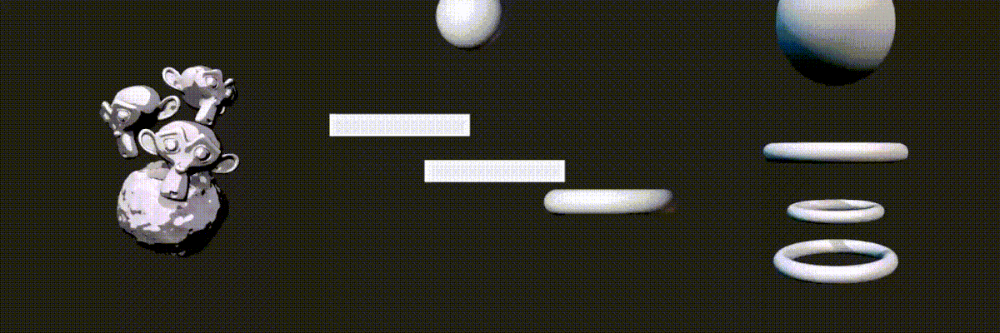

For my weekly project, I explored the fascinating world of cloth simulation, applying this technique in various scenarios to uncover its full potential. This journey allowed me to explore the intricacies of simulating cloth behavior in 3D, and I’m excited to share the results of my research through a series of animations and renderings.
